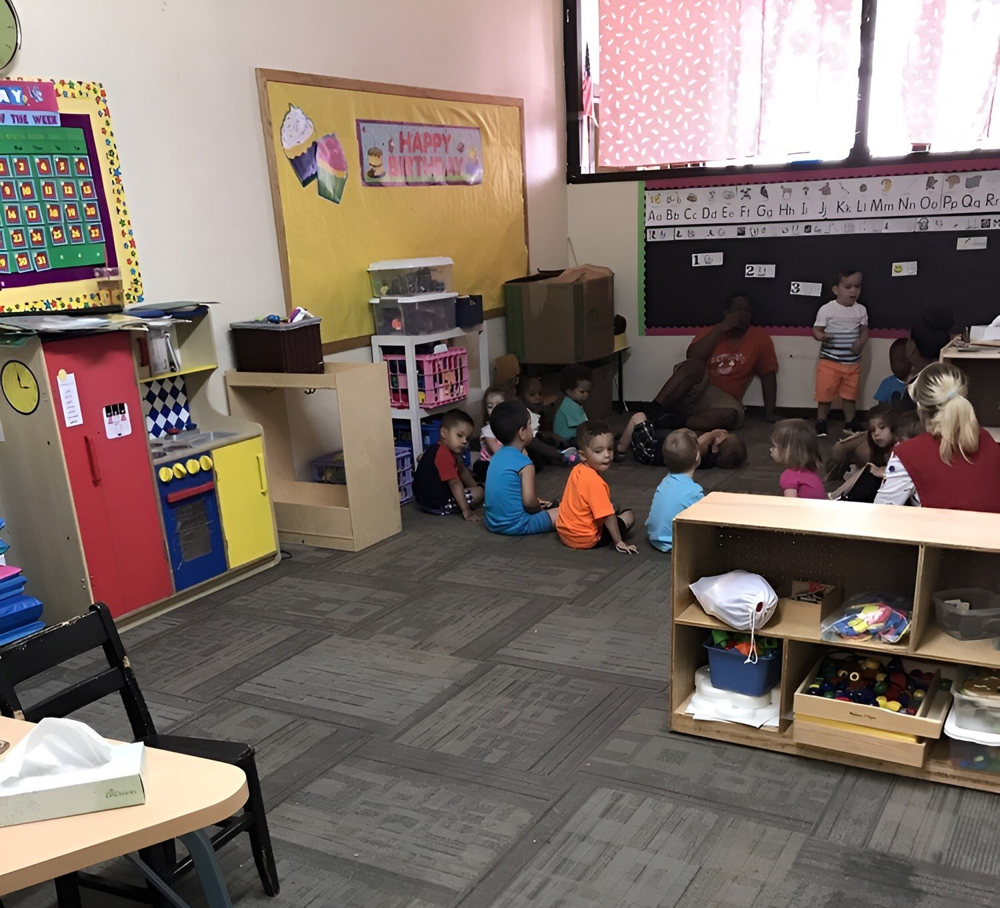
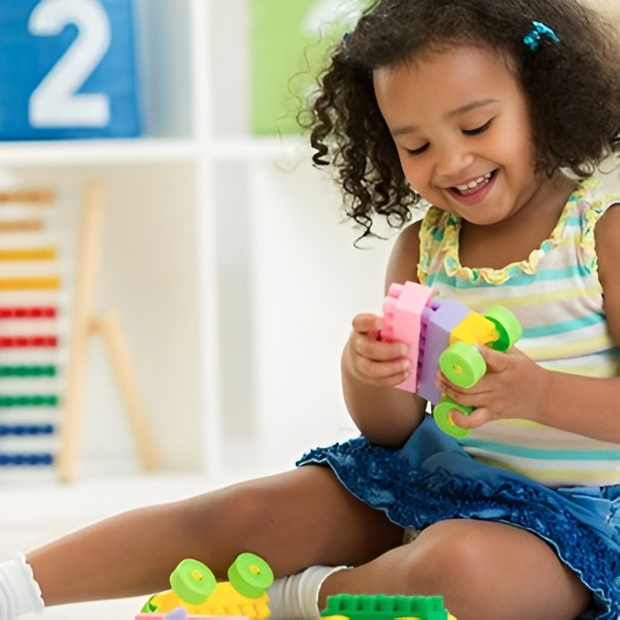
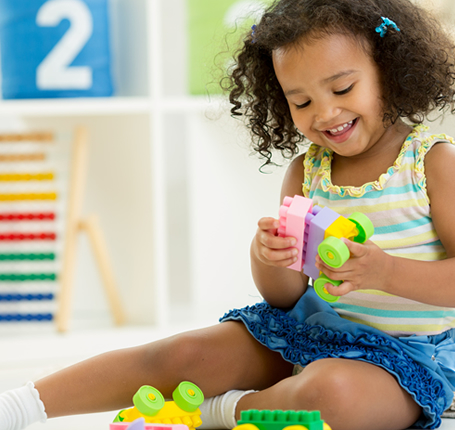

Tiny Hiney
Our youngest infants receive individualized attention — feeding, naps, tummy time, and plenty of holding and bonding with familiar caregivers.
Baby care, toddler care, preschool, and Pre-Kindergarten — each classroom is designed for your child's stage of growth.



Gentle, responsive care for our youngest Castle kids. We focus on trust, comfort, and early developmental milestones in a calm, loving setting.
Our youngest infants receive individualized attention — feeding, naps, tummy time, and plenty of holding and bonding with familiar caregivers.
As babies become more mobile and curious, we support sitting, crawling, early language, and secure exploration in a safe infant classroom.
Walking, first words, and growing independence — with teachers who celebrate every new skill while keeping routines predictable and warm.
Toddlers learn through play, movement, and relationships. Our rooms encourage language, social skills, and growing independence — including potty-training support.
Active discovery for early toddlers — songs, stories, sensory play, and guidance as children learn to share space and express big feelings.
Potty-training classrooms with patient, consistent support. Children build self-help skills, vocabulary, and confidence alongside peers.
A bridge toward preschool — longer attention for circle time, creative projects, and cooperative play that prepares children for the next step.
Structured learning with room for wonder. Our preschool and Pre-K programs build school readiness through literacy, math, science, and social skills.
Three-year-olds explore letters, numbers, art, and friendship. Teachers guide curiosity while strengthening listening and classroom routines.
Four-year-olds dig deeper into early academics and independence — preparing hearts and minds for a strong Pre-K year.
School-readiness focus: sight words, pre-reading, math, and science — so children enter kindergarten confident and eager to learn.
After-school pickup, ballet, Stretch-n-Grow fitness, and our popular summer program for schoolers are covered on our Enrichment page.